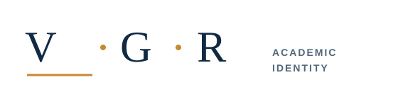
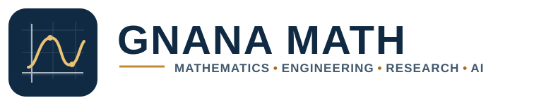
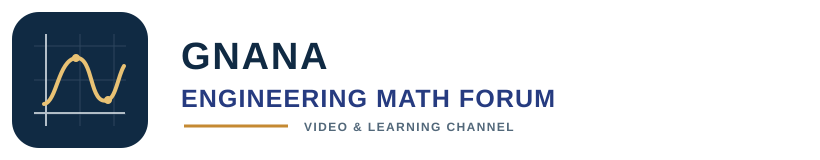
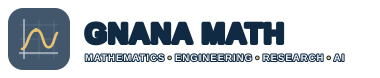

V • G • R


BRAND SYSTEM / CONCEPT 01
GNANA MATH is the primary learning and research identity. VGR is the personal academic signature. The Engineering Math Forum is the channel identity.
PRIMARY UMBRELLA IDENTITY
Mathematics • Engineering • Research • AI

 MATHEMATICS ENGINEERING RESEARCH AI
MATHEMATICS ENGINEERING RESEARCH AIPERSONAL ACADEMIC IDENTITY
Related to the GNANA MATH system, with a more personal and editorial voice.

CHANNEL IDENTITY
A coordinated video and learning channel mark. It supports the GNANA MATH umbrella identity.

SMALL-SIZE RECOGNITION
The favicon reduces the identity to one mathematical curve and a coordinate frame, without tiny lettering.
VIDEO SIGNATURE
Transparent SVG, designed to sit over different footage with restrained outline contrast.

SAMPLE VIDEO FRAME / PREVIEW ONLYCORE PALETTE
Shared with the existing homepage prototype. Gold carries emphasis; navy and white provide the working contrast.
#102A43#263B80#E9C274#F7F8FAVECTOR MASTER FILES